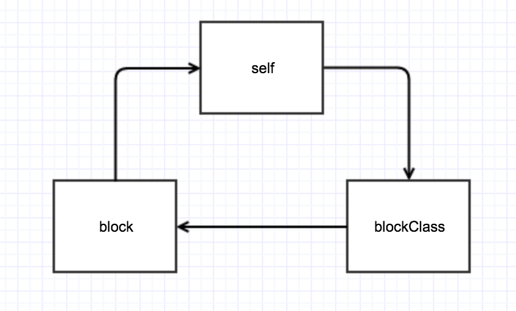

块的理解和使用
1.块的语法
通过支持块的语法功能可以声明块类型的变量和常量。
声明块类型的语法
 

//声明一个有返回值为int 有一个参的block
int (^oneParamBlock)(int );
//声明一个没有返回值为int 有两个参的block
void (^twoParamBlock)(int , int);
//声明一个有返回值为int 没有参的block
int (^noParamBlocl)();
因为可将变量设置为类型，所以快变量也可以被用作函数的方法的参数。通常可以通过创建类型定义为块类型提供别名。（typedef）
2.块常量的使用
//声明一个block
typedef int (^AdderBlock)(int);
//创建一个参数为block的方法
-(int)block:(AdderBlock) block{
int a = 0;
if (block) {
a = block(4);
}
return a;
}
//方法调用
int value = [self block:^int(int a) {
int b = a + 4;
return b;
}];
NSLog(@"%d",value);//value = 8
可以使用一条语句定义并调用块表达式。注意，块表达式是匿名的，因此调用操作符会接受带有符合块表达式的参数列表的匿名函数
//没有返回值 匿名block
^(NSString *user){
NSLog(@"%@",user);
}(@"Lemon");
3.可修改的__block变量
默认情况下，在块常量表达式中通过词汇范围访问的块局部变量不能修改。使用存储类型修改符__block可以将这些变量切换为读写模式。
__block int myValue = 10;
void(^intBlock)(int) = ^(int amout){
myValue += amout;
NSLog(@"新值：%d",myValue);
};
intBlock(5);
当引用变量的块被复制到堆存储区域时，使用__block修改符的变量也会被复制到堆存储区域。
4.块的内存管理
在运行程序时，块常量表达式会或的栈内存，因而会拥有与局部变量相同的生命周期。因此，它们必须被复制到永久存储区域（即堆）中，才能在定义它们的范围之外使用。
void (^greetingBlock)(void);
{//范围的起点，将局部变量压入栈中
greetingBlock = ^{
NSLog(@"Hello World!");
}
}//范围的终点，从栈中弹出变量（即块常量）
greetingBlock();//调用这个块可能会使程序崩溃！
Objective-C为块常量的内存管理提供了复制（Block_copy()）和释放（Block_release()）命令。
5.循环引用
block在iOS开发中被视作是对象，因此其生命周期会一直等到持有者的生命周期结束了才会结束。另一方面，由于block捕获变量的机制，使得持有block的对象也可能被block持有，从而形成循环引用，导致两者都不能被释放。
举个栗子
- (void)viewDidLoad {
[super viewDidLoad];
self.blockClass = [[LMBlockClass alloc] init];
[self setblock:^{
self.string = @"dddd";
}];
}
-(void) setblock:(void(^)())block{
if (block) {
block();
}
}
-(void)dealloc{
NSLog(@"LMAboutBlockVC销毁");
}
这种情况VC能够正常释放，因为该对象并没有持有block，没有构成引用循环。
栗子2
- (void)viewDidLoad {
[super viewDidLoad];
self.blockClass = [[LMBlockClass alloc] init];
[self.blockClass testBlock1:^{
self.string = @"ssss";
}];
}
-(void)dealloc{
NSLog(@"LMAboutBlockVC销毁");
}
/---------我是一条华丽的分割线-------------/
@interface LMBlockClass ()
@property (nonatomic,copy) LMBlock block;
@end
@implementation LMBlockClass
-(void)testBlock1:(LMBlock)block{
self.block = block;
if (self.block) {
self.block();
}
}
@end
这种情况就会导致引用循环。因为self强引用了blockClass，而blockClass也引用了block，在block中调self导致了循环引用。

6.Block底层原理
先新建一个block.m文件
然后在.m文件写上block
int main(int argc, const char * argv[]) {
@autoreleasepool {
int a = 10;
void (^block)() = ^{
printf("%d\n", a);
};
//再次给a 赋值
a = 20;
block();
}
return 0;
}
用终端cd该文件所在的文件夹下，输入命令clang -rewrite-objc block.m。会生成一个block.cpp文件。目的是为了将OC转为C++。
block.cpp对应的block
//block是一个结构体
struct __main_block_impl_0 {
struct __block_impl impl;
struct __main_block_desc_0* Desc;
int a;
//Block结构体的初始化方法
__main_block_impl_0(void *fp, struct __main_block_desc_0 *desc, int _a, int flags=0) : a(_a) {
/*
block也是OC的对象
_NSConcreteStackBlock 保存在栈中的block，出栈时会被销毁
_NSConcreteGlobalBlock 全局的静态block，不会访问任何外部变量
_NSConcreteMallocBlock 保存在堆中的block，当引用计数为0时会被销毁
*/
impl.isa = &_NSConcreteStackBlock;
impl.Flags = flags;
impl.FuncPtr = fp;//函数指针，也就是block所需要执行的代码段，真正存的地址
Desc = desc;
}
};
//block会持有block里的对象或数据
static void __main_block_func_0(struct __main_block_impl_0 *__cself) {
int a = __cself->a; // bound by copy
printf("%d\n", a);
}
//block创建空间方法
static struct __main_block_desc_0 {
size_t reserved;
size_t Block_size;
} __main_block_desc_0_DATA = { 0, sizeof(struct __main_block_impl_0)};
int main(int argc, const char * argv[]) {
/* @autoreleasepool */ { __AtAutoreleasePool __autoreleasepool;
int a = 10;
//初始化block
void (*block)() = ((void (*)())&__main_block_impl_0((void *)__main_block_func_0, &__main_block_desc_0_DATA, a));
a = 20;
((void (*)(__block_impl *))((__block_impl *)block)->FuncPtr)((__block_impl *)block);
}
return 0;
}
配置在全局的GlobalBlock可以出了作用域还是能继续访问，但是在栈上的StackBlock就废弃了，因此为了出了作用域能继续使用，OC提供了把Block和__block这两个东西从栈上复制到堆上的方法来解决这个问题。而_forwarding其实既可以指向自己，也可以指向复制后的自己，也就是说有了这个指针的存在，无论__block变量配置在堆上还是栈上都能够正确的访问__block变量。
PS:_forwarding是__block结构体中的指针
在ARC下,以下几种情况, Block会自动被从栈复制到堆:
- 被执行copy方法
- 作为方法返回值
- 将Block赋值给附有__strong修饰符的id类型的类或者Blcok类型成员变量时
- (void)viewDidLoad {
[super viewDidLoad];
void(^testBlock)();
void(^testBlock1)();
int a = 100;
testBlock1 = ^{
NSLog(@"%d",a);
};
/* testBlock1 */
/* 该block拦截了a变量且生成testBlock1变量,block在堆区 */
NSLog(@"testBlock1->%@",testBlock1);
//testBlock1-><__NSMallocBlock__: 0x61000005c560>
/* testBlock2 */
/* 该block没有拦截变量，block存在全局区 */
NSLog(@"testBlock2->%@",^{NSLog(@"mmmmmm");});
//testBlock2-><__NSGlobalBlock__: 0x109f2e290>
/* testBlock3 */
//拦截变量a，但没有生成block变量，存在栈区
NSLog(@"testBlock3->%@",^{NSLog(@"%d",a);});
//testBlock3-><__NSStackBlock__: 0x7fff5eef1b80>
/* test strongBlock */
//strongBlock
__block int val = 10;
__strong LMBlock strongPointerBlock = ^{NSLog(@"val1 = %d", ++val);};
NSLog(@"strongPointerBlock->%@",strongPointerBlock);
//strongPointerBlock-><__NSMallocBlock__: 0x600000240f90>
/* test weakBlock */
__weak LMBlock weakPointerBlock = ^{NSLog(@"val2 = %d", ++val);};
NSLog(@"weakPointerBlock->%@", weakPointerBlock);
//weakPointerBlock-><__NSStackBlock__: 0x7fff5889bb00>
/* test copyWeakBlock */
NSLog(@"mallocBlock3: %@", [weakPointerBlock copy]);
//mallocBlock3: <__NSMallocBlock__: 0x618000058a80>
/* 拦截__block变量的block */
NSLog(@"test4 %@", ^{NSLog(@"val4 = %d", ++val);});
//test4 <__NSStackBlock__: 0x7fff5b072ad8>
/* copy stackBlock */
NSLog(@"test5 %@", [^{NSLog(@"val4 = %d", ++val);} copy]);
//test5 <__NSMallocBlock__: 0x608000058ae0>
/* Block作为传参 */
// stackBlock经过传参 打印
NSLog(@"传参后 %@",[self getBlock]);
//传参后 <__NSMallocBlock__: 0x60800005c170>
}
- (LMBlock)getBlock
{
int val = 11;
NSLog(@"传参前：%@",^{NSLog(@"%d",val);});
//传参前：<__NSStackBlock__: 0x7fff55bd79b8>
return ^{NSLog(@"%d",val);};
}
用strong修饰符和weak修饰符分别打印的是malloc的和stack的，但是无论哪种，只要copy就是变成malloc类型了